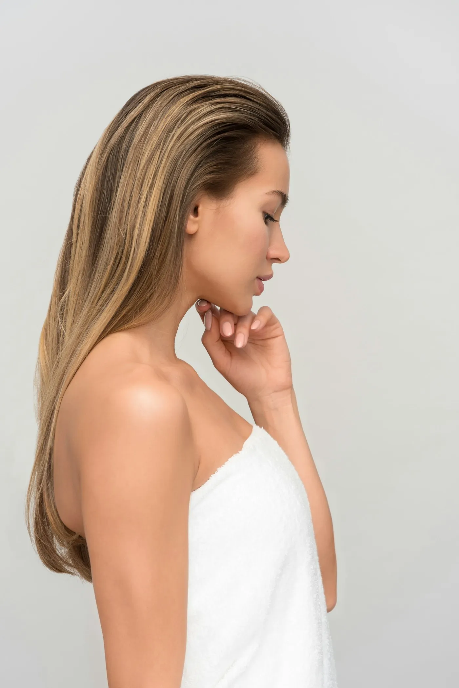
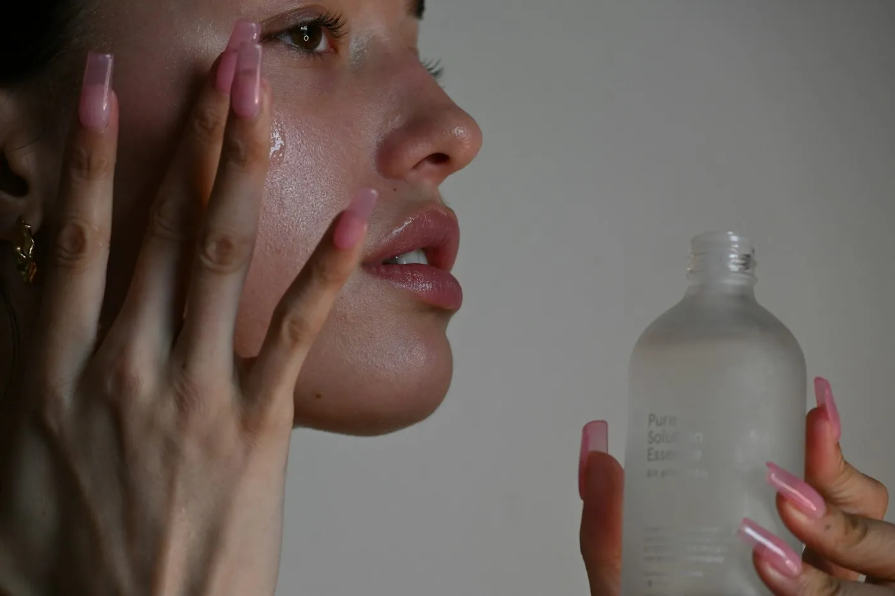
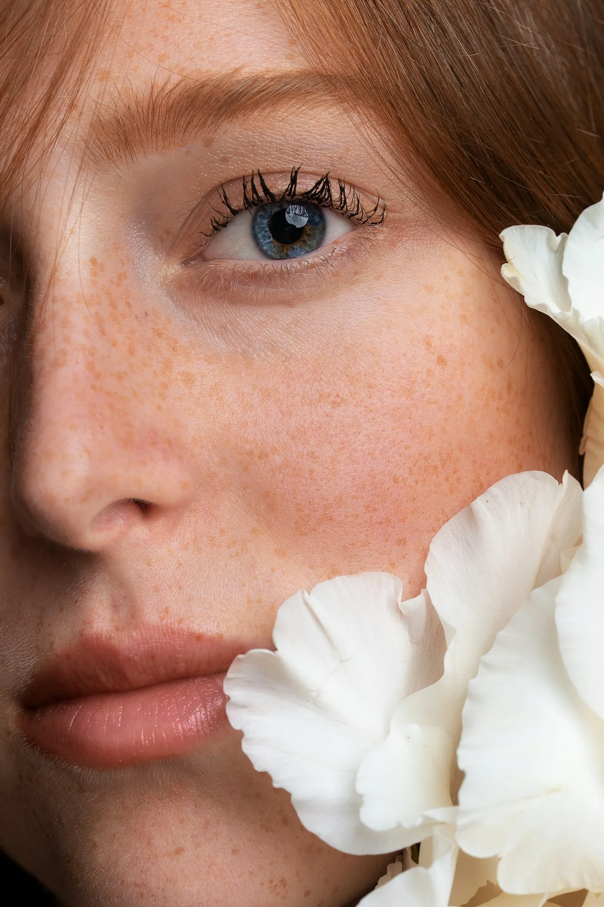

Mais você.
Nunca outra pessoa.
Toque na área que incomoda. Eu mostro o que resolve, quanto custa, quanto dura e quanto tempo de recuperação. Se não ficar natural, o retoque em 15 dias é por minha conta.
← toque num dos pontos do rosto

Retoque grátisem até 15 dias
Só produtos aprovadospela Anvisa, lote na sua frente
Avaliação de 40 minsem custo e sem empurrar procedimento
4,9 ★427 avaliações no Google
Pacientes, depois




Dra. Bianca Moraes
Dentista com especialização em harmonização orofacial, 9 anos e mais de 6 mil procedimentos. Atendo uma paciente por vez e digo quando um procedimento não vale a pena para você.
“Ninguém percebeu que eu fiz nada. Só me perguntam se eu tirei férias.”Renata, 41 anos · botox e olheiras